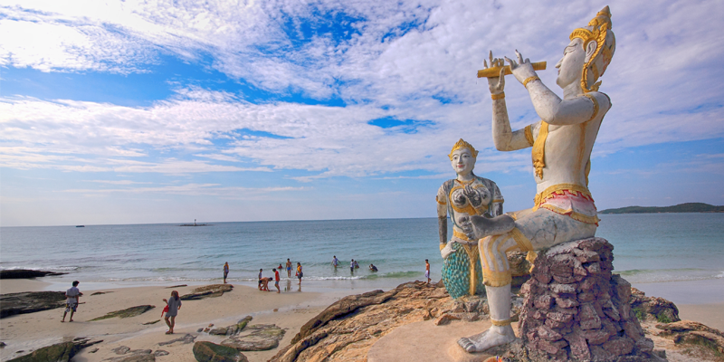
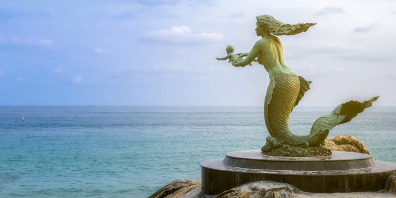
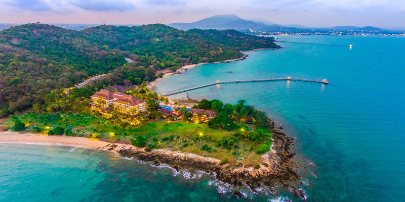
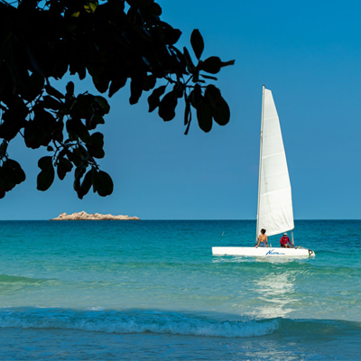
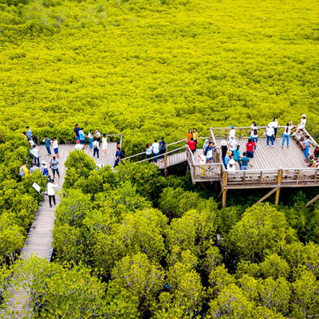

ยินดีต้อนรับสู่จังหวัดระยอง


ระยองเป็นจังหวัดชายฝั่งทะเลภาคตะวันออกที่เต็มไปด้วยเสน่ห์ของธรรมชาติ วิถีชีวิต วัฒนธรรม อาหาร และเรื่องราวทางประวัติศาสตร์ ด้วยความหลากหลายของพื้นที่ ทั้งชายหาด เกาะ ป่า น้ำตก ป่าชายเลน สวนผลไม้ ชุมชนเก่า และแหล่งเรียนรู้ทางวัฒนธรรม ทำให้ระยองเป็นจังหวัดที่สามารถท่องเที่ยวได้หลายรูปแบบตลอดทั้งปี เมื่อกล่าวถึงระยอง หลายคนอาจนึกถึงภาพของทะเลสีคราม ชายหาด และเกาะเสม็ด แต่ความจริงแล้วระยองยังมีเรื่องราวอีกมากมายให้ค้นหา นักท่องเที่ยวสามารถเริ่มต้นวันด้วยการชมพระอาทิตย์ขึ้นริมทะเล เดินเล่นท่ามกลางธรรมชาติ ศึกษาระบบนิเวศป่าชายเลน สัมผัสวิถีประมง เรียนรู้เรื่องราวจากวรรณกรรมไทย ชิมผลไม้สดจากสวน และปิดท้ายด้วยอาหารทะเลหรือบรรยากาศเมืองเก่า สิ่งที่น่าสนใจของระยองคือการที่สถานที่ท่องเที่ยวแต่ละแห่งมีเรื่องราวของตัวเอง บางแห่งโดดเด่นด้านธรรมชาติ บางแห่งสะท้อนประวัติศาสตร์ บางแห่งเชื่อมโยงกับอาชีพและวิถีชีวิตของผู้คน และบางแห่งช่วยให้ผู้มาเยือนได้เข้าใจวัฒนธรรมท้องถิ่นมากขึ้น การท่องเที่ยวระยองจึงไม่ได้หมายถึงเพียงการเดินทางไปยังสถานที่สวยงาม แต่ยังหมายถึงการเรียนรู้ ทำความเข้าใจ และสร้างความสัมพันธ์กับพื้นที่ ผ่านประสบการณ์ที่หลากหลาย คำว่า “ปักหมุดระยอง” จึงเป็นเสมือนคำเชิญชวนให้ทุกคนเลือกจุดหมายบนแผนที่ แล้วออกเดินทางไปค้นพบความอัศจรรย์ของเมืองระยองในมุมที่แตกต่างกัน
ระยอง เมืองแห่งความหลากหลาย

ความโดดเด่นของจังหวัดระยองอยู่ที่การมีทรัพยากรการท่องเที่ยวหลายประเภทอยู่ร่วมกันในพื้นที่เดียว นักท่องเที่ยวที่รักทะเลสามารถเลือกเที่ยวเกาะ ชายหาด และพื้นที่ชายฝั่ง ขณะที่ผู้ที่รักธรรมชาติก็สามารถเดินป่า ชมน้ำตก หรือศึกษาระบบนิเวศป่าชายเลนได้ สำหรับผู้ที่สนใจวัฒนธรรมและประวัติศาสตร์ ระยองก็มีทั้งชุมชนเก่า สถานที่สำคัญทางประวัติศาสตร์ เรื่องราวเกี่ยวกับสุนทรภู่ และศิลปะพื้นบ้านที่สืบทอดกันมา ในด้านเกษตรกรรม ระยองยังมีสวนผลไม้และผลผลิตที่มีชื่อเสียง ทำให้การเดินทางสามารถเชื่อมโยงกับกิจกรรมการเรียนรู้ภายในสวนและการชิมผลผลิตจากแหล่งผลิตจริง นอกจากนี้ ชุมชนชายฝั่งหลายแห่งยังมีวิถีชีวิตที่สัมพันธ์กับทะเล การประมง และการแปรรูปอาหาร นักท่องเที่ยวจึงสามารถเรียนรู้ความเชื่อมโยงระหว่างธรรมชาติ อาชีพ และวิถีชีวิตของผู้คนในพื้นที่ได้อย่างใกล้ชิด ความหลากหลายเหล่านี้ทำให้ระยองเป็นจังหวัดที่เหมาะกับการท่องเที่ยวทั้งแบบพักผ่อน แบบเรียนรู้ แบบครอบครัว แบบเชิงวัฒนธรรม และแบบท่องเที่ยวสร้างสรรค์

เกาะเสม็ดเป็นหนึ่งในสถานที่ท่องเที่ยวทางทะเลที่เป็นที่รู้จักของจังหวัดระยอง และเป็นจุดหมายสำคัญของนักท่องเที่ยวที่ต้องการพักผ่อนท่ามกลางธรรมชาติ เสน่ห์ของเกาะเสม็ดอยู่ที่บรรยากาศของชายหาด อ่าว และพื้นที่ริมทะเลที่มีความแตกต่างกัน นักท่องเที่ยวสามารถเลือกพักผ่อนในบริเวณที่คึกคักหรือเลือกพื้นที่ที่เงียบสงบมากขึ้นตามความต้องการของตนเอง ในแต่ละช่วงเวลาของวัน เกาะเสม็ดมีบรรยากาศแตกต่างกัน ช่วงเช้าเหมาะกับการเดินเล่นริมชายหาด ช่วงกลางวันเหมาะกับกิจกรรมทางทะเล ส่วนช่วงเย็นก็เหมาะกับการพักผ่อนและชมบรรยากาศของแสงอาทิตย์ที่ค่อย ๆ เปลี่ยนสีเหนือท้องทะเล
more
ทุ่งโปรงทองเป็นหนึ่งในสถานที่ท่องเที่ยวทางธรรมชาติที่มีเอกลักษณ์ของจังหวัดระยอง ตั้งอยู่ในพื้นที่ปากน้ำประแส จุดเด่นของพื้นที่คือผืนป่าชายเลนที่มีต้นโปรงจำนวนมาก เมื่อต้องแสงแดด สีของยอดไม้จะเกิดความสวยงามจนกลายเป็นภาพจำของสถานที่ เส้นทางเดินภายในพื้นที่เปิดโอกาสให้นักท่องเที่ยวได้สัมผัสป่าชายเลนอย่างใกล้ชิด และเรียนรู้ระบบนิเวศที่มีความสำคัญต่อพื้นที่ชายฝั่ง ป่าชายเลนมีบทบาทหลายอย่าง ทั้งเป็นแหล่งที่อยู่อาศัยของสัตว์ แหล่งอนุบาลสัตว์น้ำ และพื้นที่ที่ช่วยลดผลกระทบจากคลื่นและการกัดเซาะชายฝั่ง
moreสุนทรภู่เป็นกวีสำคัญของไทยที่มีผลงานเป็นที่รู้จักอย่างกว้างขวาง จังหวัดระยองมีสถานที่ที่เชื่อมโยงกับเรื่องราวของสุนทรภู่ และอนุสาวรีย์สุนทรภู่ในอำเภอแกลงเป็นหนึ่งในสถานที่สำคัญที่ช่วยให้ผู้มาเยือนได้เรียนรู้เรื่องวรรณกรรมผ่านพื้นที่จริง บริเวณอนุสาวรีย์มีการนำตัวละครจากวรรณคดีมาเป็นองค์ประกอบ ทำให้ผู้มาเยือนสามารถเชื่อมโยงภาพที่เห็นกับเรื่องราวจากบทประพันธ์ การท่องเที่ยวในลักษณะนี้ช่วยให้วรรณกรรมไม่อยู่เพียงในหนังสือ แต่สามารถกลายเป็นประสบการณ์ที่ผู้เดินทางสัมผัสได้
more